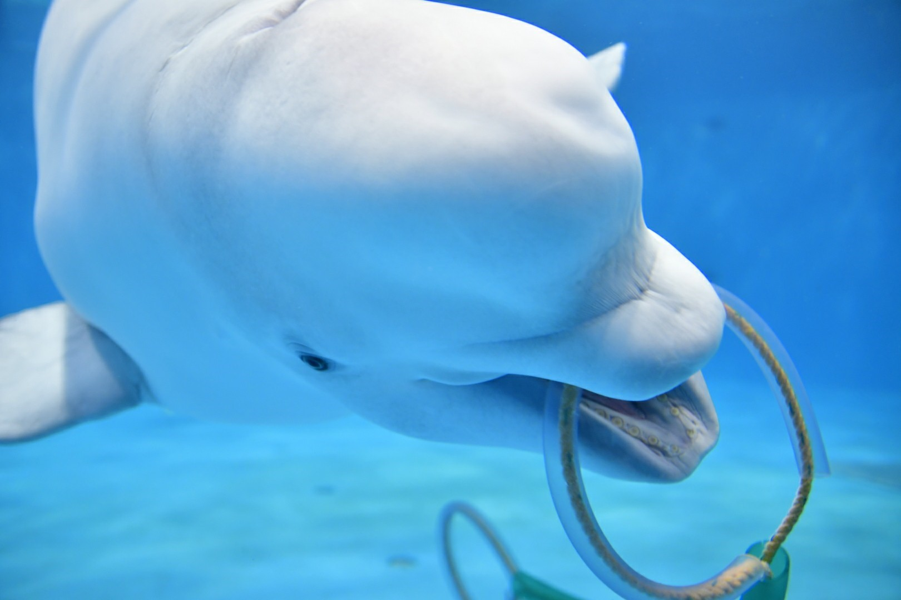

Are we doing ?
夏季（４～８月）はキャンプや登山、冬季（１０～３月）は旅行をするサークルです！
部会は毎週水曜１２時１５分～（昼休み）と土曜１０時～の週２回行っています！
必要最低限の装備はご購入頂きますが、できるだけ安い交通費・宿泊費で行けるように自分たちで計画を練り、登山や旅行を楽しみましょう！
夏季の活動の様子
夏季（４～８月）には登山をします。BBQや頂上からの絶景など、様々なアウトドア体験ができます！
「運動は苦手だけど、大学ではアウトドア系にも挑戦してみたい」という方にもオススメです！！


冬季の活動の様子
冬季（１０～３月）には旅行をします。旅行先は、部員たちで案を出し合って旅行先を決めます。
「貴方の行ってみたい場所」に行ける大チャンスです！交通費や宿泊費もできるだけ安く済ませるので、金銭面の心配も少ないです！

- 